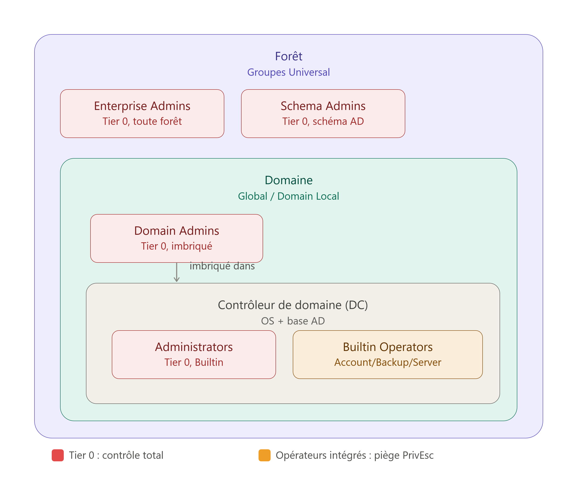

Dans Active Directory, tous les groupes ne se valent pas. Sept d'entre eux concentrent à eux seuls la quasi-totalité du risque de compromission totale d'un domaine — et le plus dangereux n'est pas toujours celui qu'on croit. Certains sont évidents (Domain Admins), d'autres se présentent comme de simples rôles opérationnels (Backup Operators, Server Operators) alors qu'ils offrent, dans les faits, un chemin direct vers le contrôle total du domaine.

| Groupe | Portée (Scope) | Niveau (Tier) | Vecteur de risque / usage principal |
|---|---|---|---|
| Enterprise Admins | Forêt (Root) | Tier 0 | Contrôle absolu sur la totalité de la forêt Active Directory. |
| Schema Admins | Forêt (Root) | Tier 0 | Modification de la structure de la base de données AD. |
| Domain Admins | Domaine | Tier 0 | Contrôle total sur un domaine spécifique et ses machines jointes. |
| Administrators | Domaine / DC | Tier 0 | Gestionnaires directs des contrôleurs de domaine (DC). |
| Account Operators | Domaine | Élevé | Création/gestion de comptes non protégés (PrivEsc potentiel). |
| Backup Operators | Domaine / DC | Critique | Contourne le NTFS pour lire la base AD (ntds.dit) (PrivEsc direct). |
| Server Operators | Domaine / DC | Critique | Gestion des services et sessions sur les DC (PrivEsc direct). |
1. Deux vocabulaires qu'il ne faut pas confondre
Avant d'aller plus loin, il faut désamorcer une confusion très fréquente : « Built-in » et « Tier 0 » ne mesurent pas la même chose.
- « Built-in » désigne une origine technique dans l'annuaire : c'est simplement le nom du conteneur (
CN=Builtin) où Windows range les groupes système précréés historiquement par l'OS, avec des identifiants (SID) fixes commeS-1-5-32-544pourAdministrators. À l'inverse,CN=Usersest le conteneur par défaut où Active Directory génère les groupes globaux de domaine commeDomain Admins(RID 512). - « Tier 0 » désigne un niveau de privilège, dans le modèle de sécurité par paliers (tiering) recommandé par l'ANSSI et Microsoft : tout groupe capable de contrôler un contrôleur de domaine ou la base Active Directory elle-même est classé Tier 0, quel que soit son conteneur d'origine.
Autrement dit : Administrators est Built-in et Tier 0. Domain Admins n'est pas Built-in (il vit dans CN=Users) mais il est tout autant Tier 0. Le terme "Built-in" ne dit rien sur le niveau de dangerosité d'un groupe — c'est uniquement une étiquette d'emplacement.
2. Le compte `Administrator` et le groupe `Administrators` : deux choses différentes
Un compte est une identité ; un groupe est un conteneur de droits. La confusion entre les deux est fréquente, en particulier parce que le nom se ressemble.
- Le compte
Administrator: une identité individuelle, présente par défaut sur chaque installation Windows — y compris un simple PC qui n'a jamais rejoint de domaine AD. Son identifiant (SID) se termine par-500. - Le groupe
Administrators: le conteneur qui détient les droits techniques absolus sur le système local (SIDS-1-5-32-544). C'est ce groupe — pas le compte — qui porte réellement les privilèges Windows bas niveau : installer des pilotes, lire la mémoire système, modifier le registre.
Par défaut, le compte Administrator est simplement le premier membre inscrit dans le groupe Administrators. Ce mécanisme existe sur toute machine Windows, domaine ou pas — un poste isolé, jamais joint à un AD, a lui aussi son compte Administrator et son groupe Administrators locaux.
3. Pourquoi `Domain Admins` est imbriqué dans `Administrators`
C'est ici que la hiérarchie technique devient intéressante — et légèrement contre-intuitive.
Techniquement, le groupe Administrators est au-dessus de Domain Admins.
- L'origine des privilèges : c'est
Administratorsqui détient nativement les privilèges système bas niveau sur les contrôleurs de domaine (charger des pilotes, lire la mémoire kernel, gérer les services).Domain Adminsne possède pas ces droits par lui-même — il les hérite uniquement parce qu'il est membre d'Administrators. - Le test de séparation : si on retire
Domain Adminsdu groupeAdministrators, ses membres perdent immédiatement la capacité d'administrer les contrôleurs de domaine — impossible de s'y connecter en RDP, de gérer les services système ou d'agir sur la mémoire du DC. - Le pouvoir final : un utilisateur placé uniquement dans
Administratorsa le pouvoir absolu sur l'OS du DC. Il peut donc manipuler directement le processusLSASSou la base Active Directory au niveau fichier — et s'ajouter lui-même dansDomain Adminss'il le souhaite.
Administrators est donc le conteneur final des droits système. Domain Admins n'est qu'un groupe global imbriqué dedans par défaut, pour faciliter la gestion à grande échelle.
4. Une portée plus large, pas un privilège supérieur
Il y a bien une asymétrie entre les deux groupes — mais elle porte sur la portée réseau, pas sur le niveau de sécurité. Les deux sont strictly Tier 0.
Domain Admins(groupe global) : quand une machine rejoint le domaine, Active Directory injecte automatiquementDomain Adminsdans le groupeAdministrateurslocal de cette machine. Cela lui donne un pouvoir d'administration transverse sur tout le parc — postes, serveurs, DC compris.Administrators(groupe Builtin / Domain Local) : ce groupe contrôle uniquement l'OS des contrôleurs de domaine et la base AD. Il n'est pas injecté automatiquement sur les postes clients ou les serveurs membres.
L'analogie qui fixe l'idée : imagine un grand hôtel (le réseau d'entreprise) avec des centaines de chambres (les serveurs et les postes).
• Administrators = la serrure de la chambre. Chaque machine possède son propre groupe Administrators : c'est la serrure locale qui dit « toute personne dans ce groupe a le contrôle total de cette machine ».
• Domain Admins = le pass-partout des employés. C'est le groupe global du réseau dans lequel on place les comptes de l'équipe IT.
Quand une nouvelle machine rejoint le domaine, Windows dit automatiquement à sa serrure locale (Administrators) : « accepte le pass-partout (Domain Admins) ». Résultat : l'équipe IT peut dépanner n'importe quelle machine du réseau instantanément, sans configurer chaque poste un par un.
5. Pourquoi deux groupes distincts, alors ?
Trois raisons structurelles justifient cette séparation entre Domain Admins (porteur d'identités) et Administrators (porteur de droits effectifs) :
a) La flexibilité multi-domaines (logique AGDLP)
Domain Admins est un groupe Global (il rassemble des identités d'un domaine précis) ; Administrators est un groupe Domain Local (il détient les privilèges système effectifs). Dans une entreprise avec deux domaines (france.techcorp.local et usa.techcorp.local), on peut ajouter le Domain Admins de France dans le groupe Administrators des DC américains — accordant un accès croisé propre sans jamais mélanger la gestion des comptes des deux pays. C'est exactement le même principe que l'architecture AGDLP appliquée aux permissions de fichiers, mais transposé au contrôle des serveurs eux-mêmes.
b) L'automatisation du parc informatique
Windows a besoin d'un conteneur mobile, distribuable sur tout le réseau. Sans Domain Admins, il faudrait configurer manuellement les droits d'administration sur chaque nouveau serveur ou poste client — un travail insoutenable à l'échelle d'un parc de plusieurs centaines de machines.
c) La cohérence avec le noyau Windows
Toute machine Windows, du PC individuel au serveur, possède le groupe Administrators pour gérer ses droits internes (services, pilotes, registre). Le conserver sur le contrôleur de domaine permet au noyau Windows d'appliquer exactement les mêmes mécanismes de sécurité système (UAC, politiques de privilèges) que sur n'importe quel autre serveur — pendant que Domain Admins sert de couche d'abstraction propre à Active Directory.
En résumé, la logique est la suivante :
Domain Admins sert à regrouper les utilisateurs (les identités de l'équipe IT). Administrators sert à porter les droits et accès effectifs sur le système d'exploitation.
Compte Admin → Domain Admins (porteur d'utilisateurs) → Administrators (porteur de droits) → Accès système
C'est cette séparation stricte entre rassemblement des comptes et attribution des droits qui rend Active Directory aussi souple à gérer à grande échelle — la même logique, littéralement, que celle qui structure AGDLP pour les permissions sur fichiers.
6. Enterprise Admins et Schema Admins : changer d'échelle, passer à la forêt
Enterprise Admins (EA) et Schema Admins (SA) ne sont ni des groupes Globaux ni des groupes Domain Local : ce sont des groupes Universels (Universal Groups), et ils n'existent qu'à un seul endroit — le domaine racine de la forêt AD. On quitte ici le niveau Domaine pour passer au niveau Forêt.
a) Enterprise Admins : la surcouche d'identités de la forêt
C'est un conteneur d'utilisateurs, comme Domain Admins, mais conçu pour gérer plusieurs domaines à la fois.
- Comment il obtient ses droits : par défaut, Active Directory imbrique automatiquement
Enterprise Adminsdans le groupeAdministratorsde chaque domaine de la forêt. - Résultat : un membre d'
Enterprise Adminspossède automatiquement les droits d'administration locale sur tous les contrôleurs de domaine de toutes les filiales de l'entreprise. Il doit rester vide au quotidien, et n'être peuplé que pour des opérations d'infrastructure majeures (création d'un nouveau domaine, approbation de forêt).
b) Schema Admins : le privilège direct sur la base de données
Ici, la mécanique diverge complètement : Schema Admins ne s'imbrique pas dans Administrators et ne sert pas à gérer des serveurs Windows.
- Comment il obtient ses droits : il possède des permissions d'écriture directes (ACL) sur la partition Schéma de la base Active Directory.
- Son rôle : le schéma est le "plan de construction" d'AD — il définit ce qu'est un utilisateur, un ordinateur, quels attributs ils peuvent porter.
Schema Adminsest le seul groupe autorisé à modifier ce plan (par exemple lors de l'installation d'un serveur Exchange ou d'une mise à niveau majeure d'AD). Il doit rester vide en permanence, et n'être peuplé que temporairement, le temps d'une extension de schéma.
Résumé de la mécanique à trois échelles :
Domain Admins= conteneur d'identités pour 1 domaine.Enterprise Admins= conteneur d'identités injecté dans la serrureAdministratorsde tous les domaines de la forêt.Schema Admins= porteur de droits direct sur la base de données (le plan d'AD lui-même).
7. Les "Built-in Operators" : le piège de la fausse délégation
Conçus à l'origine par Microsoft pour déléguer des tâches quotidiennes sans attribuer le rôle Domain Admin, ces trois groupes Domain Local (Builtin) offrent en réalité des chemins d'élévation de privilèges (Privilege Escalation) quasi-immédiats vers le contrôle total du domaine. C'est le piège le plus sous-estimé d'Active Directory : on pense attribuer un rôle technique restreint, alors qu'on offre en réalité un bouton "passer Administrateur du Domaine".
Account Operators
- Rôle officiel : créer, modifier et supprimer des comptes utilisateurs, ordinateurs et groupes du domaine.
- Ce qu'il ne peut pas toucher directement : les comptes protégés par le mécanisme AdminSDHolder (
Domain Admins,Administrators, etc.). - Le danger caché : même sans pouvoir toucher directement aux comptes protégés, un attaquant membre de ce groupe peut créer des objets ordinateurs malveillants, réinitialiser le mot de passe de comptes de service stratégiques, ou configurer une délégation Kerberos (Resource-Based Constrained Delegation) pour pivoter jusqu'au statut
Domain Admin.
Backup Operators
- Rôle officiel : effectuer les sauvegardes et restaurations sur les contrôleurs de domaine.
- Privilèges système clés :
SeBackupPrivilegeetSeRestorePrivilege— deux privilèges qui ordonnent au noyau Windows d'ignorer totalement les permissions NTFS. - Le danger caché : un membre peut copier directement le fichier
ntds.dit(la base de données AD) et la rucheSYSTEMdepuis le contrôleur de domaine, puis extraire hors ligne les hachages NTLM de tous les comptes de l'entreprise — y compriskrbtgtetAdministrator. C'est un vol direct de la base de mots de passe complète du domaine, en quelques secondes.
Server Operators
- Rôle officiel : gérer la configuration des contrôleurs de domaine — redémarrer le serveur, gérer les services, fermer des sessions.
- Le danger caché : gérer les services sur un contrôleur de domaine équivaut à contrôler le domaine. Un attaquant peut reconfigurer le chemin d'exécutable d'un service système pour y injecter un script malveillant. Au redémarrage du service, le script s'exécute avec les droits suprêmes du DC (
NT AUTHORITY\SYSTEM).
| Groupe | Type de groupe | Droits système cibles | Risque d'élévation de privilèges | Recommandation ANSSI / Microsoft |
|---|---|---|---|---|
| Account Operators | Domaine Local | Gestion d'objets AD (hors admins) | Élevé (attaques Kerberos) | Laisser vide — préférer la délégation par OU |
| Backup Operators | Domaine Local | SeBackupPrivilege sur DC |
Critique (vol de la base ntds.dit) |
Laisser vide — utiliser des comptes gMSA |
| Server Operators | Domaine Local | Gestion de services & logon sur DC | Critique (exécution de code en SYSTEM) |
Laisser vide — restreindre l'accès aux DC |
8. Le point commun de tous les scénarios d'attaque : le vol de jeton en mémoire
Au-delà des trois "Operators", le risque le plus systémique touche Domain Admins et Enterprise Admins eux-mêmes : le vol de jeton / Pass-the-Hash.
Ces comptes possèdent les clés du royaume. Si un membre de ce groupe se connecte sur un poste de travail compromis — même un simple poste utilisateur, pas un serveur — son hachage de mot de passe reste en mémoire RAM, dans le processus LSASS. Un attaquant qui extrait ce hachage (avec un outil comme Mimikatz) devient administrateur sur tout le réseau, sans même connaître le mot de passe en clair. C'est pour cette raison précise que la bonne pratique interdit d'utiliser un compte Domain Admin pour se connecter sur une machine utilisateur — c'est le principe du Tiering.
9. La règle d'or
En environnement de production, selon les recommandations conjointes de l'ANSSI et de Microsoft :
- Tier 0 (
Enterprise Admins,Schema Admins) : laissés vides à 100 % au quotidien, peuplés temporairement uniquement pour des opérations d'infrastructure majeures, puis vidés immédiatement après. Domain Admins/Administrators: effectif réduit au strict minimum (2 à 3 comptes nommés maximum), jamais utilisés pour se connecter sur une machine utilisateur.- Les trois "Built-in Operators" (
Account,Backup,Server Operators) : usage proscrit. La gestion des accès doit s'effectuer exclusivement par délégation de contrôle granulaire sur des Unités d'Organisation (OU) ciblées — jamais par l'ajout à un groupe intégré dont les privilèges réels dépassent largement le besoin apparent.
C'est cette discipline — vider les groupes les plus puissants et déléguer précisément, plutôt que d'ajouter des membres à des rôles préfabriqués trop larges — qui distingue une architecture Active Directory résiliente d'une architecture qui ne demande qu'à être compromise en un seul mouvement latéral.